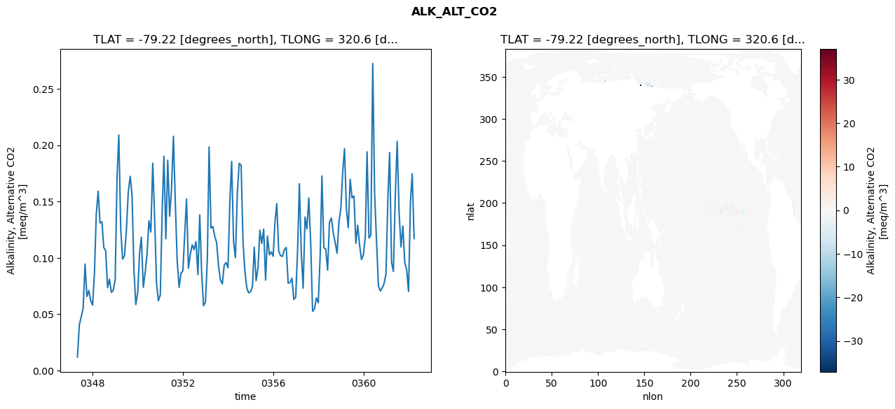
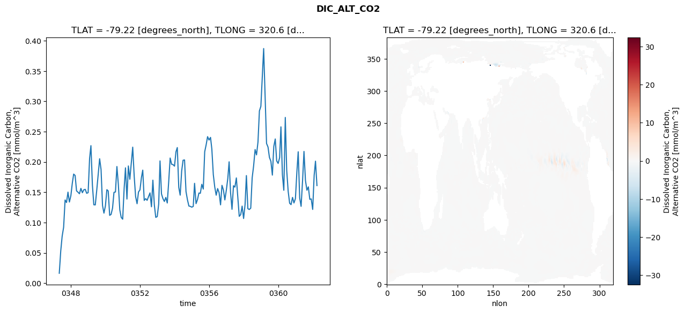
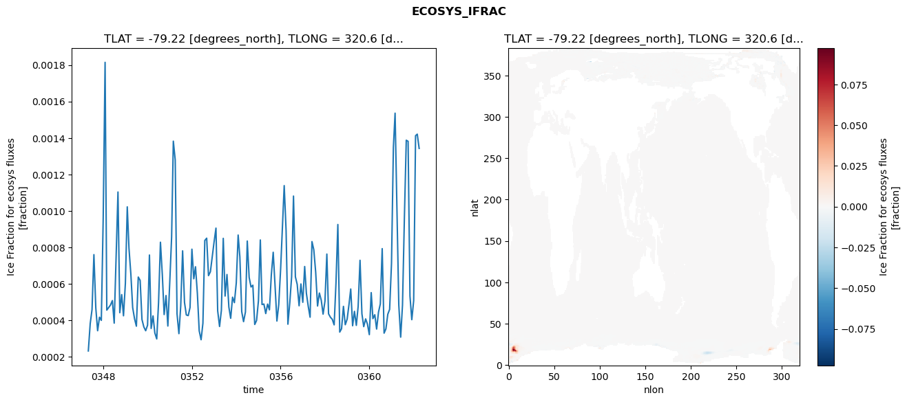
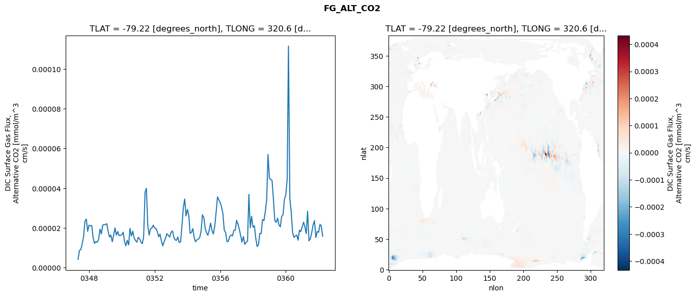

glb-dor_North_Atlantic_basin_014_1999-04-01_00057#
Simulation details#
Case: smyle.cdr-atlas-v0.glb-dor_North_Atlantic_basin_014_1999-04-01_00057.001
Basin: North_Atlantic_basin
Polygon: 14.0
Start date: 1999-04
Show code cell source Hide code cell source
import xarray as xr
import matplotlib.pyplot as plt
Show code cell source Hide code cell source
zarr_store = "/path/to/zarr/store"
# Parameters
zarr_store = "/global/cfs/projectdirs/m4746/Projects/Ocean-CDR-Atlas-v0/data/validation/smyle.cdr-atlas-v0.glb-dor_North_Atlantic_basin_014_1999-04-01_00057.001.validation.zarr"
Show code cell source Hide code cell source
%%time
ds_o = xr.open_zarr(zarr_store).compute()
ds_o
CPU times: user 581 ms, sys: 504 ms, total: 1.08 s
Wall time: 1.29 s
<xarray.Dataset> Size: 2MB
Dimensions: (nlat: 384, nlon: 320, time: 180)
Coordinates:
TLAT float64 8B -79.22
TLONG float64 8B 320.6
ULAT float64 8B -78.95
ULONG float64 8B 321.1
* time (time) object 1kB 0347-05-01 00:00:00 ... 0362-04-01 0...
z_t float32 4B 500.0
Dimensions without coordinates: nlat, nlon
Data variables:
ALK_ALT_CO2_diff (nlat, nlon) float32 492kB nan nan nan ... nan nan nan
ALK_ALT_CO2_rmse (time) float64 1kB 0.01186 0.04076 ... 0.1745 0.1171
DIC_ALT_CO2_diff (nlat, nlon) float32 492kB nan nan nan ... nan nan nan
DIC_ALT_CO2_rmse (time) float64 1kB 0.01639 0.05308 ... 0.2013 0.161
ECOSYS_IFRAC_diff (nlat, nlon) float32 492kB nan nan nan ... nan nan nan
ECOSYS_IFRAC_rmse (time) float64 1kB 0.0002305 0.0003805 ... 0.001342
FG_ALT_CO2_diff (nlat, nlon) float32 492kB nan nan nan ... nan nan nan
FG_ALT_CO2_rmse (time) float64 1kB 4.271e-06 8.714e-06 ... 1.587e-05xarray.Dataset
- nlat: 384
- nlon: 320
- time: 180
- TLAT()float64-79.22
- long_name :
- array of t-grid latitudes
- units :
- degrees_north
array(-79.22052261)
- TLONG()float64320.6
- long_name :
- array of t-grid longitudes
- units :
- degrees_east
array(320.56250892)
- ULAT()float64-78.95
- long_name :
- array of u-grid latitudes
- units :
- degrees_north
array(-78.95289509)
- ULONG()float64321.1
- long_name :
- array of u-grid longitudes
- units :
- degrees_east
array(321.12500894)
- time(time)object0347-05-01 00:00:00 ... 0362-04-...
- bounds :
- time_bound
- long_name :
- time
array([cftime.DatetimeNoLeap(347, 5, 1, 0, 0, 0, 0, has_year_zero=True), cftime.DatetimeNoLeap(347, 6, 1, 0, 0, 0, 0, has_year_zero=True), cftime.DatetimeNoLeap(347, 7, 1, 0, 0, 0, 0, has_year_zero=True), cftime.DatetimeNoLeap(347, 8, 1, 0, 0, 0, 0, has_year_zero=True), cftime.DatetimeNoLeap(347, 9, 1, 0, 0, 0, 0, has_year_zero=True), cftime.DatetimeNoLeap(347, 10, 1, 0, 0, 0, 0, has_year_zero=True), cftime.DatetimeNoLeap(347, 11, 1, 0, 0, 0, 0, has_year_zero=True), cftime.DatetimeNoLeap(347, 12, 1, 0, 0, 0, 0, has_year_zero=True), cftime.DatetimeNoLeap(348, 1, 1, 0, 0, 0, 0, has_year_zero=True), cftime.DatetimeNoLeap(348, 2, 1, 0, 0, 0, 0, has_year_zero=True), cftime.DatetimeNoLeap(348, 3, 1, 0, 0, 0, 0, has_year_zero=True), cftime.DatetimeNoLeap(348, 4, 1, 0, 0, 0, 0, has_year_zero=True), cftime.DatetimeNoLeap(348, 5, 1, 0, 0, 0, 0, has_year_zero=True), cftime.DatetimeNoLeap(348, 6, 1, 0, 0, 0, 0, has_year_zero=True), cftime.DatetimeNoLeap(348, 7, 1, 0, 0, 0, 0, has_year_zero=True), cftime.DatetimeNoLeap(348, 8, 1, 0, 0, 0, 0, has_year_zero=True), cftime.DatetimeNoLeap(348, 9, 1, 0, 0, 0, 0, has_year_zero=True), cftime.DatetimeNoLeap(348, 10, 1, 0, 0, 0, 0, has_year_zero=True), cftime.DatetimeNoLeap(348, 11, 1, 0, 0, 0, 0, has_year_zero=True), cftime.DatetimeNoLeap(348, 12, 1, 0, 0, 0, 0, has_year_zero=True), cftime.DatetimeNoLeap(349, 1, 1, 0, 0, 0, 0, has_year_zero=True), cftime.DatetimeNoLeap(349, 2, 1, 0, 0, 0, 0, has_year_zero=True), cftime.DatetimeNoLeap(349, 3, 1, 0, 0, 0, 0, has_year_zero=True), cftime.DatetimeNoLeap(349, 4, 1, 0, 0, 0, 0, has_year_zero=True), cftime.DatetimeNoLeap(349, 5, 1, 0, 0, 0, 0, has_year_zero=True), cftime.DatetimeNoLeap(349, 6, 1, 0, 0, 0, 0, has_year_zero=True), cftime.DatetimeNoLeap(349, 7, 1, 0, 0, 0, 0, has_year_zero=True), cftime.DatetimeNoLeap(349, 8, 1, 0, 0, 0, 0, has_year_zero=True), cftime.DatetimeNoLeap(349, 9, 1, 0, 0, 0, 0, has_year_zero=True), cftime.DatetimeNoLeap(349, 10, 1, 0, 0, 0, 0, has_year_zero=True), cftime.DatetimeNoLeap(349, 11, 1, 0, 0, 0, 0, has_year_zero=True), cftime.DatetimeNoLeap(349, 12, 1, 0, 0, 0, 0, has_year_zero=True), cftime.DatetimeNoLeap(350, 1, 1, 0, 0, 0, 0, has_year_zero=True), cftime.DatetimeNoLeap(350, 2, 1, 0, 0, 0, 0, has_year_zero=True), cftime.DatetimeNoLeap(350, 3, 1, 0, 0, 0, 0, has_year_zero=True), cftime.DatetimeNoLeap(350, 4, 1, 0, 0, 0, 0, has_year_zero=True), cftime.DatetimeNoLeap(350, 5, 1, 0, 0, 0, 0, has_year_zero=True), cftime.DatetimeNoLeap(350, 6, 1, 0, 0, 0, 0, has_year_zero=True), cftime.DatetimeNoLeap(350, 7, 1, 0, 0, 0, 0, has_year_zero=True), cftime.DatetimeNoLeap(350, 8, 1, 0, 0, 0, 0, has_year_zero=True), cftime.DatetimeNoLeap(350, 9, 1, 0, 0, 0, 0, has_year_zero=True), cftime.DatetimeNoLeap(350, 10, 1, 0, 0, 0, 0, has_year_zero=True), cftime.DatetimeNoLeap(350, 11, 1, 0, 0, 0, 0, has_year_zero=True), cftime.DatetimeNoLeap(350, 12, 1, 0, 0, 0, 0, has_year_zero=True), cftime.DatetimeNoLeap(351, 1, 1, 0, 0, 0, 0, has_year_zero=True), cftime.DatetimeNoLeap(351, 2, 1, 0, 0, 0, 0, has_year_zero=True), cftime.DatetimeNoLeap(351, 3, 1, 0, 0, 0, 0, has_year_zero=True), cftime.DatetimeNoLeap(351, 4, 1, 0, 0, 0, 0, has_year_zero=True), cftime.DatetimeNoLeap(351, 5, 1, 0, 0, 0, 0, has_year_zero=True), cftime.DatetimeNoLeap(351, 6, 1, 0, 0, 0, 0, has_year_zero=True), cftime.DatetimeNoLeap(351, 7, 1, 0, 0, 0, 0, has_year_zero=True), cftime.DatetimeNoLeap(351, 8, 1, 0, 0, 0, 0, has_year_zero=True), cftime.DatetimeNoLeap(351, 9, 1, 0, 0, 0, 0, has_year_zero=True), cftime.DatetimeNoLeap(351, 10, 1, 0, 0, 0, 0, has_year_zero=True), cftime.DatetimeNoLeap(351, 11, 1, 0, 0, 0, 0, has_year_zero=True), cftime.DatetimeNoLeap(351, 12, 1, 0, 0, 0, 0, has_year_zero=True), cftime.DatetimeNoLeap(352, 1, 1, 0, 0, 0, 0, has_year_zero=True), cftime.DatetimeNoLeap(352, 2, 1, 0, 0, 0, 0, has_year_zero=True), cftime.DatetimeNoLeap(352, 3, 1, 0, 0, 0, 0, has_year_zero=True), cftime.DatetimeNoLeap(352, 4, 1, 0, 0, 0, 0, has_year_zero=True), cftime.DatetimeNoLeap(352, 5, 1, 0, 0, 0, 0, has_year_zero=True), cftime.DatetimeNoLeap(352, 6, 1, 0, 0, 0, 0, has_year_zero=True), cftime.DatetimeNoLeap(352, 7, 1, 0, 0, 0, 0, has_year_zero=True), cftime.DatetimeNoLeap(352, 8, 1, 0, 0, 0, 0, has_year_zero=True), cftime.DatetimeNoLeap(352, 9, 1, 0, 0, 0, 0, has_year_zero=True), cftime.DatetimeNoLeap(352, 10, 1, 0, 0, 0, 0, has_year_zero=True), cftime.DatetimeNoLeap(352, 11, 1, 0, 0, 0, 0, has_year_zero=True), cftime.DatetimeNoLeap(352, 12, 1, 0, 0, 0, 0, has_year_zero=True), cftime.DatetimeNoLeap(353, 1, 1, 0, 0, 0, 0, has_year_zero=True), cftime.DatetimeNoLeap(353, 2, 1, 0, 0, 0, 0, has_year_zero=True), cftime.DatetimeNoLeap(353, 3, 1, 0, 0, 0, 0, has_year_zero=True), cftime.DatetimeNoLeap(353, 4, 1, 0, 0, 0, 0, has_year_zero=True), cftime.DatetimeNoLeap(353, 5, 1, 0, 0, 0, 0, has_year_zero=True), cftime.DatetimeNoLeap(353, 6, 1, 0, 0, 0, 0, has_year_zero=True), cftime.DatetimeNoLeap(353, 7, 1, 0, 0, 0, 0, has_year_zero=True), cftime.DatetimeNoLeap(353, 8, 1, 0, 0, 0, 0, has_year_zero=True), cftime.DatetimeNoLeap(353, 9, 1, 0, 0, 0, 0, has_year_zero=True), cftime.DatetimeNoLeap(353, 10, 1, 0, 0, 0, 0, has_year_zero=True), cftime.DatetimeNoLeap(353, 11, 1, 0, 0, 0, 0, has_year_zero=True), cftime.DatetimeNoLeap(353, 12, 1, 0, 0, 0, 0, has_year_zero=True), cftime.DatetimeNoLeap(354, 1, 1, 0, 0, 0, 0, has_year_zero=True), cftime.DatetimeNoLeap(354, 2, 1, 0, 0, 0, 0, has_year_zero=True), cftime.DatetimeNoLeap(354, 3, 1, 0, 0, 0, 0, has_year_zero=True), cftime.DatetimeNoLeap(354, 4, 1, 0, 0, 0, 0, has_year_zero=True), cftime.DatetimeNoLeap(354, 5, 1, 0, 0, 0, 0, has_year_zero=True), cftime.DatetimeNoLeap(354, 6, 1, 0, 0, 0, 0, has_year_zero=True), cftime.DatetimeNoLeap(354, 7, 1, 0, 0, 0, 0, has_year_zero=True), cftime.DatetimeNoLeap(354, 8, 1, 0, 0, 0, 0, has_year_zero=True), cftime.DatetimeNoLeap(354, 9, 1, 0, 0, 0, 0, has_year_zero=True), cftime.DatetimeNoLeap(354, 10, 1, 0, 0, 0, 0, has_year_zero=True), cftime.DatetimeNoLeap(354, 11, 1, 0, 0, 0, 0, has_year_zero=True), cftime.DatetimeNoLeap(354, 12, 1, 0, 0, 0, 0, has_year_zero=True), cftime.DatetimeNoLeap(355, 1, 1, 0, 0, 0, 0, has_year_zero=True), cftime.DatetimeNoLeap(355, 2, 1, 0, 0, 0, 0, has_year_zero=True), cftime.DatetimeNoLeap(355, 3, 1, 0, 0, 0, 0, has_year_zero=True), cftime.DatetimeNoLeap(355, 4, 1, 0, 0, 0, 0, has_year_zero=True), cftime.DatetimeNoLeap(355, 5, 1, 0, 0, 0, 0, has_year_zero=True), cftime.DatetimeNoLeap(355, 6, 1, 0, 0, 0, 0, has_year_zero=True), cftime.DatetimeNoLeap(355, 7, 1, 0, 0, 0, 0, has_year_zero=True), cftime.DatetimeNoLeap(355, 8, 1, 0, 0, 0, 0, has_year_zero=True), cftime.DatetimeNoLeap(355, 9, 1, 0, 0, 0, 0, has_year_zero=True), cftime.DatetimeNoLeap(355, 10, 1, 0, 0, 0, 0, has_year_zero=True), cftime.DatetimeNoLeap(355, 11, 1, 0, 0, 0, 0, has_year_zero=True), cftime.DatetimeNoLeap(355, 12, 1, 0, 0, 0, 0, has_year_zero=True), cftime.DatetimeNoLeap(356, 1, 1, 0, 0, 0, 0, has_year_zero=True), cftime.DatetimeNoLeap(356, 2, 1, 0, 0, 0, 0, has_year_zero=True), cftime.DatetimeNoLeap(356, 3, 1, 0, 0, 0, 0, has_year_zero=True), cftime.DatetimeNoLeap(356, 4, 1, 0, 0, 0, 0, has_year_zero=True), cftime.DatetimeNoLeap(356, 5, 1, 0, 0, 0, 0, has_year_zero=True), cftime.DatetimeNoLeap(356, 6, 1, 0, 0, 0, 0, has_year_zero=True), cftime.DatetimeNoLeap(356, 7, 1, 0, 0, 0, 0, has_year_zero=True), cftime.DatetimeNoLeap(356, 8, 1, 0, 0, 0, 0, has_year_zero=True), cftime.DatetimeNoLeap(356, 9, 1, 0, 0, 0, 0, has_year_zero=True), cftime.DatetimeNoLeap(356, 10, 1, 0, 0, 0, 0, has_year_zero=True), cftime.DatetimeNoLeap(356, 11, 1, 0, 0, 0, 0, has_year_zero=True), cftime.DatetimeNoLeap(356, 12, 1, 0, 0, 0, 0, has_year_zero=True), cftime.DatetimeNoLeap(357, 1, 1, 0, 0, 0, 0, has_year_zero=True), cftime.DatetimeNoLeap(357, 2, 1, 0, 0, 0, 0, has_year_zero=True), cftime.DatetimeNoLeap(357, 3, 1, 0, 0, 0, 0, has_year_zero=True), cftime.DatetimeNoLeap(357, 4, 1, 0, 0, 0, 0, has_year_zero=True), cftime.DatetimeNoLeap(357, 5, 1, 0, 0, 0, 0, has_year_zero=True), cftime.DatetimeNoLeap(357, 6, 1, 0, 0, 0, 0, has_year_zero=True), cftime.DatetimeNoLeap(357, 7, 1, 0, 0, 0, 0, has_year_zero=True), cftime.DatetimeNoLeap(357, 8, 1, 0, 0, 0, 0, has_year_zero=True), cftime.DatetimeNoLeap(357, 9, 1, 0, 0, 0, 0, has_year_zero=True), cftime.DatetimeNoLeap(357, 10, 1, 0, 0, 0, 0, has_year_zero=True), cftime.DatetimeNoLeap(357, 11, 1, 0, 0, 0, 0, has_year_zero=True), cftime.DatetimeNoLeap(357, 12, 1, 0, 0, 0, 0, has_year_zero=True), cftime.DatetimeNoLeap(358, 1, 1, 0, 0, 0, 0, has_year_zero=True), cftime.DatetimeNoLeap(358, 2, 1, 0, 0, 0, 0, has_year_zero=True), cftime.DatetimeNoLeap(358, 3, 1, 0, 0, 0, 0, has_year_zero=True), cftime.DatetimeNoLeap(358, 4, 1, 0, 0, 0, 0, has_year_zero=True), cftime.DatetimeNoLeap(358, 5, 1, 0, 0, 0, 0, has_year_zero=True), cftime.DatetimeNoLeap(358, 6, 1, 0, 0, 0, 0, has_year_zero=True), cftime.DatetimeNoLeap(358, 7, 1, 0, 0, 0, 0, has_year_zero=True), cftime.DatetimeNoLeap(358, 8, 1, 0, 0, 0, 0, has_year_zero=True), cftime.DatetimeNoLeap(358, 9, 1, 0, 0, 0, 0, has_year_zero=True), cftime.DatetimeNoLeap(358, 10, 1, 0, 0, 0, 0, has_year_zero=True), cftime.DatetimeNoLeap(358, 11, 1, 0, 0, 0, 0, has_year_zero=True), cftime.DatetimeNoLeap(358, 12, 1, 0, 0, 0, 0, has_year_zero=True), cftime.DatetimeNoLeap(359, 1, 1, 0, 0, 0, 0, has_year_zero=True), cftime.DatetimeNoLeap(359, 2, 1, 0, 0, 0, 0, has_year_zero=True), cftime.DatetimeNoLeap(359, 3, 1, 0, 0, 0, 0, has_year_zero=True), cftime.DatetimeNoLeap(359, 4, 1, 0, 0, 0, 0, has_year_zero=True), cftime.DatetimeNoLeap(359, 5, 1, 0, 0, 0, 0, has_year_zero=True), cftime.DatetimeNoLeap(359, 6, 1, 0, 0, 0, 0, has_year_zero=True), cftime.DatetimeNoLeap(359, 7, 1, 0, 0, 0, 0, has_year_zero=True), cftime.DatetimeNoLeap(359, 8, 1, 0, 0, 0, 0, has_year_zero=True), cftime.DatetimeNoLeap(359, 9, 1, 0, 0, 0, 0, has_year_zero=True), cftime.DatetimeNoLeap(359, 10, 1, 0, 0, 0, 0, has_year_zero=True), cftime.DatetimeNoLeap(359, 11, 1, 0, 0, 0, 0, has_year_zero=True), cftime.DatetimeNoLeap(359, 12, 1, 0, 0, 0, 0, has_year_zero=True), cftime.DatetimeNoLeap(360, 1, 1, 0, 0, 0, 0, has_year_zero=True), cftime.DatetimeNoLeap(360, 2, 1, 0, 0, 0, 0, has_year_zero=True), cftime.DatetimeNoLeap(360, 3, 1, 0, 0, 0, 0, has_year_zero=True), cftime.DatetimeNoLeap(360, 4, 1, 0, 0, 0, 0, has_year_zero=True), cftime.DatetimeNoLeap(360, 5, 1, 0, 0, 0, 0, has_year_zero=True), cftime.DatetimeNoLeap(360, 6, 1, 0, 0, 0, 0, has_year_zero=True), cftime.DatetimeNoLeap(360, 7, 1, 0, 0, 0, 0, has_year_zero=True), cftime.DatetimeNoLeap(360, 8, 1, 0, 0, 0, 0, has_year_zero=True), cftime.DatetimeNoLeap(360, 9, 1, 0, 0, 0, 0, has_year_zero=True), cftime.DatetimeNoLeap(360, 10, 1, 0, 0, 0, 0, has_year_zero=True), cftime.DatetimeNoLeap(360, 11, 1, 0, 0, 0, 0, has_year_zero=True), cftime.DatetimeNoLeap(360, 12, 1, 0, 0, 0, 0, has_year_zero=True), cftime.DatetimeNoLeap(361, 1, 1, 0, 0, 0, 0, has_year_zero=True), cftime.DatetimeNoLeap(361, 2, 1, 0, 0, 0, 0, has_year_zero=True), cftime.DatetimeNoLeap(361, 3, 1, 0, 0, 0, 0, has_year_zero=True), cftime.DatetimeNoLeap(361, 4, 1, 0, 0, 0, 0, has_year_zero=True), cftime.DatetimeNoLeap(361, 5, 1, 0, 0, 0, 0, has_year_zero=True), cftime.DatetimeNoLeap(361, 6, 1, 0, 0, 0, 0, has_year_zero=True), cftime.DatetimeNoLeap(361, 7, 1, 0, 0, 0, 0, has_year_zero=True), cftime.DatetimeNoLeap(361, 8, 1, 0, 0, 0, 0, has_year_zero=True), cftime.DatetimeNoLeap(361, 9, 1, 0, 0, 0, 0, has_year_zero=True), cftime.DatetimeNoLeap(361, 10, 1, 0, 0, 0, 0, has_year_zero=True), cftime.DatetimeNoLeap(361, 11, 1, 0, 0, 0, 0, has_year_zero=True), cftime.DatetimeNoLeap(361, 12, 1, 0, 0, 0, 0, has_year_zero=True), cftime.DatetimeNoLeap(362, 1, 1, 0, 0, 0, 0, has_year_zero=True), cftime.DatetimeNoLeap(362, 2, 1, 0, 0, 0, 0, has_year_zero=True), cftime.DatetimeNoLeap(362, 3, 1, 0, 0, 0, 0, has_year_zero=True), cftime.DatetimeNoLeap(362, 4, 1, 0, 0, 0, 0, has_year_zero=True)], dtype=object) - z_t()float32500.0
- long_name :
- depth from surface to midpoint of layer
- positive :
- down
- units :
- centimeters
- valid_max :
- 537500.0
- valid_min :
- 500.0
array(500., dtype=float32)
- ALK_ALT_CO2_diff(nlat, nlon)float32nan nan nan nan ... nan nan nan nan
- cell_methods :
- time: mean
- grid_loc :
- 3111
- long_name :
- Alkalinity, Alternative CO2
- units :
- meq/m^3
array([[ nan, nan, nan, ..., nan, nan, nan], [ nan, nan, nan, ..., nan, nan, nan], [0.01708984, 0.02587891, 0.04589844, ..., nan, nan, nan], ..., [ nan, nan, nan, ..., nan, nan, nan], [ nan, nan, nan, ..., nan, nan, nan], [ nan, nan, nan, ..., nan, nan, nan]], dtype=float32) - ALK_ALT_CO2_rmse(time)float640.01186 0.04076 ... 0.1745 0.1171
- cell_methods :
- time: mean
- grid_loc :
- 3111
- long_name :
- Alkalinity, Alternative CO2
- units :
- meq/m^3
array([0.0118578 , 0.04076204, 0.04748975, 0.05496382, 0.09447961, 0.06567445, 0.07098732, 0.06204321, 0.05797214, 0.08747147, 0.13833559, 0.15914708, 0.13100767, 0.13198377, 0.10921487, 0.1062513 , 0.0735413 , 0.08102442, 0.06929028, 0.07122417, 0.08030504, 0.17239436, 0.20909006, 0.12589106, 0.09882275, 0.10179836, 0.12361444, 0.15824361, 0.17236488, 0.15566818, 0.08912674, 0.0584452 , 0.06936328, 0.10505724, 0.11825565, 0.07386116, 0.08668649, 0.10388821, 0.13289707, 0.1229014 , 0.18402667, 0.13598651, 0.07724614, 0.06188131, 0.06706 , 0.14279353, 0.19025027, 0.11690431, 0.18668059, 0.13695395, 0.16093045, 0.20793875, 0.14895569, 0.09737485, 0.07377453, 0.08624946, 0.08838407, 0.12186378, 0.15230577, 0.09084233, 0.10306167, 0.11159854, 0.10723135, 0.11443683, 0.08514387, 0.1381572 , 0.08648283, 0.05744638, 0.06058248, 0.09902303, 0.1984333 , 0.12636376, 0.12779787, 0.11903951, 0.11346402, 0.09285077, 0.08011967, 0.07680201, 0.093599 , 0.09585062, 0.09119553, 0.15149345, 0.18567567, 0.11411154, 0.10003815, 0.15776633, 0.18387554, 0.18232452, 0.11415506, 0.0880946 , 0.07323254, 0.06888965, 0.06980808, 0.07473146, 0.10937395, 0.07975091, 0.09090632, 0.12456128, 0.11273531, 0.12552631, 0.08019039, 0.11937653, 0.10264471, 0.10529514, 0.10133761, 0.13269173, 0.14817817, 0.10607048, 0.10192678, 0.10130577, 0.10718371, 0.10920148, 0.07746253, 0.07799798, 0.08190989, 0.06302159, 0.06508618, 0.10763313, 0.16575061, 0.10506079, 0.0730002 , 0.13615021, 0.1255894 , 0.15305733, 0.11199835, 0.05255978, 0.05469729, 0.06435422, 0.06008312, 0.10229322, 0.17272634, 0.10895457, 0.10790212, 0.08905 , 0.13178615, 0.1352748 , 0.12186803, 0.1136175 , 0.10415767, 0.13187731, 0.14410141, 0.17693454, 0.19697103, 0.14322696, 0.12677673, 0.16975004, 0.15324746, 0.15491037, 0.11298198, 0.12893718, 0.11098411, 0.09840659, 0.10290962, 0.1190662 , 0.1941131 , 0.11757069, 0.12004706, 0.27263524, 0.1577573 , 0.11495098, 0.07487705, 0.07056315, 0.07320806, 0.07712722, 0.08573682, 0.15327658, 0.19355623, 0.09609682, 0.08792281, 0.15605326, 0.20334569, 0.14007741, 0.10964201, 0.12824187, 0.09542627, 0.08969081, 0.07013459, 0.15057331, 0.17450199, 0.11705343]) - DIC_ALT_CO2_diff(nlat, nlon)float32nan nan nan nan ... nan nan nan nan
- cell_methods :
- time: mean
- grid_loc :
- 3111
- long_name :
- Dissolved Inorganic Carbon, Alternative CO2
- units :
- mmol/m^3
array([[ nan, nan, nan, ..., nan, nan, nan], [ nan, nan, nan, ..., nan, nan, nan], [-0.00097656, 0.02514648, 0.06469727, ..., nan, nan, nan], ..., [ nan, nan, nan, ..., nan, nan, nan], [ nan, nan, nan, ..., nan, nan, nan], [ nan, nan, nan, ..., nan, nan, nan]], dtype=float32) - DIC_ALT_CO2_rmse(time)float640.01639 0.05308 ... 0.2013 0.161
- cell_methods :
- time: mean
- grid_loc :
- 3111
- long_name :
- Dissolved Inorganic Carbon, Alternative CO2
- units :
- mmol/m^3
array([0.01639066, 0.05307741, 0.07743732, 0.09230289, 0.13727909, 0.13306806, 0.15018605, 0.13384954, 0.14433299, 0.16525868, 0.17993793, 0.17766135, 0.15224617, 0.15009066, 0.14757102, 0.1564343 , 0.1492348 , 0.15404902, 0.15479548, 0.14827783, 0.14937573, 0.20621093, 0.22688703, 0.16193936, 0.12936138, 0.129146 , 0.15265425, 0.17861954, 0.20525151, 0.18743769, 0.12818803, 0.11557545, 0.12747918, 0.15424885, 0.1521949 , 0.11190135, 0.11349342, 0.12391429, 0.14986736, 0.15043946, 0.19244842, 0.16323922, 0.12100322, 0.10851759, 0.10557995, 0.15661625, 0.19026221, 0.13880162, 0.19339267, 0.17149967, 0.19722842, 0.22439423, 0.17668124, 0.14291202, 0.13111749, 0.15050399, 0.15387223, 0.17420432, 0.18649272, 0.13656016, 0.13945464, 0.1367048 , 0.14277575, 0.14898683, 0.1260616 , 0.16995606, 0.12901929, 0.10860847, 0.10988733, 0.13056605, 0.20169658, 0.14725447, 0.13962232, 0.13481878, 0.14145804, 0.13229338, 0.16820121, 0.20645971, 0.19617017, 0.19559341, 0.19307818, 0.21680478, 0.22375151, 0.15804984, 0.14523808, 0.18486166, 0.20282063, 0.20332085, 0.15117036, 0.13779227, 0.12728898, 0.12672843, 0.12541296, 0.12666722, 0.16474828, 0.13120235, 0.13776071, 0.14875672, 0.14831861, 0.16313815, 0.15527539, 0.21677366, 0.22842989, 0.24174698, 0.23612055, 0.24050489, 0.22127533, 0.17914976, 0.15886532, 0.1451648 , 0.15612039, 0.1493635 , 0.12925303, 0.16142865, 0.15359899, 0.1373985 , 0.15329111, 0.17267809, 0.20023063, 0.14896794, 0.12187004, 0.16073968, 0.15846052, 0.1736873 , 0.14166105, 0.11026244, 0.1131291 , 0.12714539, 0.10673679, 0.12966909, 0.1775267 , 0.12295458, 0.12158338, 0.1238251 , 0.17370195, 0.19366367, 0.2205136 , 0.21166389, 0.2329538 , 0.28419049, 0.29177958, 0.34244209, 0.38706871, 0.30817805, 0.23046041, 0.22459214, 0.20742846, 0.20105972, 0.17831264, 0.22547826, 0.23790178, 0.20170743, 0.19754405, 0.20706222, 0.25787444, 0.17892924, 0.15329683, 0.27343163, 0.18614078, 0.15149388, 0.13186564, 0.12962241, 0.14152144, 0.13233514, 0.13945879, 0.18364351, 0.2167859 , 0.14077701, 0.12677031, 0.16909286, 0.21735544, 0.1695174 , 0.15337034, 0.15890837, 0.13830142, 0.1390319 , 0.12169948, 0.17805544, 0.20126631, 0.16103161]) - ECOSYS_IFRAC_diff(nlat, nlon)float32nan nan nan nan ... nan nan nan nan
- cell_methods :
- time: mean
- grid_loc :
- 2110
- long_name :
- Ice Fraction for ecosys fluxes
- units :
- fraction
array([[ nan, nan, nan, ..., nan, nan, nan], [ nan, nan, nan, ..., nan, nan, nan], [-0.00094056, -0.0022909 , -0.00415856, ..., nan, nan, nan], ..., [ nan, nan, nan, ..., nan, nan, nan], [ nan, nan, nan, ..., nan, nan, nan], [ nan, nan, nan, ..., nan, nan, nan]], dtype=float32) - ECOSYS_IFRAC_rmse(time)float640.0002305 0.0003805 ... 0.001342
- cell_methods :
- time: mean
- grid_loc :
- 2110
- long_name :
- Ice Fraction for ecosys fluxes
- units :
- fraction
array([0.00023047, 0.0003805 , 0.00045744, 0.00075937, 0.00046706, 0.00034154, 0.00041582, 0.00039835, 0.00096019, 0.00181503, 0.00045456, 0.00046867, 0.00048282, 0.00050715, 0.00038319, 0.0007505 , 0.00110314, 0.00044052, 0.0005399 , 0.00042361, 0.00060176, 0.00102162, 0.00079485, 0.00065298, 0.00046839, 0.00040702, 0.00036656, 0.00063628, 0.00061786, 0.00040314, 0.00036218, 0.00034151, 0.00037204, 0.00075715, 0.00035405, 0.00042297, 0.0003291 , 0.00029645, 0.00049679, 0.00082749, 0.00064815, 0.00043035, 0.00053467, 0.00036737, 0.00060512, 0.00085646, 0.00138228, 0.00127988, 0.00043427, 0.0003255 , 0.00047777, 0.00078012, 0.00049698, 0.00042822, 0.00042454, 0.00046898, 0.00078918, 0.00062682, 0.00069276, 0.00054525, 0.00034106, 0.00029219, 0.0003827 , 0.00083689, 0.00084964, 0.00064406, 0.00066521, 0.00074493, 0.00082924, 0.00090483, 0.00045094, 0.00036488, 0.00045351, 0.00084871, 0.00053194, 0.00065027, 0.0004719 , 0.00040989, 0.00052573, 0.00049568, 0.00060372, 0.00086681, 0.0007475 , 0.00044594, 0.00039136, 0.00044451, 0.00083401, 0.00063439, 0.00058189, 0.00059148, 0.00037594, 0.00039759, 0.00050596, 0.00083983, 0.00048545, 0.00048789, 0.00043574, 0.0004878 , 0.00045621, 0.00064792, 0.00077223, 0.00059096, 0.00039476, 0.0004853 , 0.00067961, 0.00091992, 0.00113823, 0.00089208, 0.00037737, 0.00049583, 0.0006369 , 0.00108085, 0.00063779, 0.00059587, 0.0004785 , 0.00059827, 0.0004976 , 0.00069413, 0.0005476 , 0.00047463, 0.00041585, 0.00083084, 0.00078639, 0.00066369, 0.00047724, 0.00054854, 0.00050863, 0.00043272, 0.00050418, 0.00076242, 0.00043436, 0.00041547, 0.00040439, 0.00037365, 0.00060245, 0.00092474, 0.00033401, 0.0003526 , 0.00047532, 0.00037448, 0.00040518, 0.00048696, 0.00057054, 0.00036893, 0.0004479 , 0.00037092, 0.00047492, 0.00072824, 0.00043463, 0.00036394, 0.00040647, 0.00037829, 0.0003201 , 0.00055074, 0.00040779, 0.00042936, 0.00035077, 0.0004436 , 0.00048877, 0.00079233, 0.00032826, 0.00035167, 0.00043205, 0.00045869, 0.00071056, 0.00134785, 0.00153595, 0.00100123, 0.00048297, 0.00030635, 0.00048221, 0.00095914, 0.00138741, 0.00138142, 0.00053186, 0.00040226, 0.0005067 , 0.00141233, 0.00142072, 0.00134242]) - FG_ALT_CO2_diff(nlat, nlon)float32nan nan nan nan ... nan nan nan nan
- cell_methods :
- time: mean
- grid_loc :
- 2110
- long_name :
- DIC Surface Gas Flux, Alternative CO2
- units :
- mmol/m^3 cm/s
array([[ nan, nan, nan, ..., nan, nan, nan], [ nan, nan, nan, ..., nan, nan, nan], [9.424228e-06, 9.872892e-06, 2.027824e-05, ..., nan, nan, nan], ..., [ nan, nan, nan, ..., nan, nan, nan], [ nan, nan, nan, ..., nan, nan, nan], [ nan, nan, nan, ..., nan, nan, nan]], dtype=float32) - FG_ALT_CO2_rmse(time)float644.271e-06 8.714e-06 ... 1.587e-05
- cell_methods :
- time: mean
- grid_loc :
- 2110
- long_name :
- DIC Surface Gas Flux, Alternative CO2
- units :
- mmol/m^3 cm/s
array([4.27107775e-06, 8.71407226e-06, 9.12320063e-06, 1.20720267e-05, 1.55565458e-05, 2.33012032e-05, 2.45036132e-05, 1.83511732e-05, 2.14462316e-05, 2.10920199e-05, 2.12215325e-05, 1.51597885e-05, 1.22692238e-05, 1.32292214e-05, 1.28134408e-05, 1.42667951e-05, 1.94177770e-05, 1.70345163e-05, 2.14961673e-05, 2.16561128e-05, 2.17597963e-05, 2.21557744e-05, 1.84052496e-05, 1.54521319e-05, 1.64876488e-05, 1.30650246e-05, 1.63655640e-05, 2.00896963e-05, 1.63939348e-05, 1.82601805e-05, 1.62012774e-05, 1.63836699e-05, 1.65366348e-05, 1.79117283e-05, 1.31844710e-05, 1.10618526e-05, 1.38514838e-05, 1.15068038e-05, 1.97862781e-05, 1.59862262e-05, 1.84062441e-05, 1.50318933e-05, 1.37003297e-05, 1.28725272e-05, 1.53490140e-05, 1.45284072e-05, 1.29944643e-05, 1.20902860e-05, 1.56161997e-05, 3.78518065e-05, 3.99897325e-05, 2.11515290e-05, 1.64241871e-05, 1.96309581e-05, 2.00228142e-05, 2.14269335e-05, 2.00510306e-05, 1.96806732e-05, 1.81326954e-05, 1.55895693e-05, 1.69271514e-05, 1.34654864e-05, 1.10456845e-05, 1.31117051e-05, 1.49348330e-05, 1.71303948e-05, 1.63986203e-05, 1.54959599e-05, 1.78350189e-05, 1.85340079e-05, 1.56772552e-05, 1.40477028e-05, 1.38016761e-05, 1.54911937e-05, 1.27410086e-05, 1.30221296e-05, 2.10764993e-05, 3.01254346e-05, 3.45795176e-05, 2.60653886e-05, ... 2.09562613e-05, 2.77288112e-05, 3.56949791e-05, 3.41347615e-05, 3.27960146e-05, 3.03862366e-05, 2.73052874e-05, 1.89757764e-05, 1.77758924e-05, 1.30574365e-05, 1.33882193e-05, 1.57556537e-05, 1.64391996e-05, 1.60312840e-05, 1.88855112e-05, 1.88187846e-05, 2.38902454e-05, 2.18422673e-05, 1.94372660e-05, 1.61114832e-05, 1.29275518e-05, 1.57184395e-05, 1.17523451e-05, 1.28158203e-05, 1.34224299e-05, 3.69053227e-05, 2.00355506e-05, 2.58729337e-05, 2.03763713e-05, 2.10868285e-05, 1.53278489e-05, 1.07581490e-05, 1.14575144e-05, 1.72929398e-05, 1.71766804e-05, 2.42372763e-05, 2.37165965e-05, 2.81795109e-05, 3.41986403e-05, 5.70248778e-05, 4.49080404e-05, 4.44773122e-05, 4.39311427e-05, 3.42491125e-05, 2.36739459e-05, 2.28867722e-05, 2.49397849e-05, 2.15168010e-05, 2.06008041e-05, 2.58132906e-05, 2.67383622e-05, 3.44667421e-05, 3.67026288e-05, 4.47054330e-05, 1.11516024e-04, 3.49077334e-05, 2.81312578e-05, 1.78461874e-05, 1.52739155e-05, 1.59898467e-05, 1.64480199e-05, 1.38946155e-05, 1.89277003e-05, 1.82223775e-05, 2.05443513e-05, 2.29336086e-05, 2.07309299e-05, 1.71714884e-05, 2.84277309e-05, 1.35224894e-05, 1.46109612e-05, 1.76236699e-05, 2.15611250e-05, 2.36943248e-05, 1.52318258e-05, 1.82482854e-05, 1.78471779e-05, 2.18698626e-05, 2.10575542e-05, 1.58700773e-05])
- timePandasIndex
PandasIndex(CFTimeIndex([0347-05-01 00:00:00, 0347-06-01 00:00:00, 0347-07-01 00:00:00, 0347-08-01 00:00:00, 0347-09-01 00:00:00, 0347-10-01 00:00:00, 0347-11-01 00:00:00, 0347-12-01 00:00:00, 0348-01-01 00:00:00, 0348-02-01 00:00:00, ... 0361-07-01 00:00:00, 0361-08-01 00:00:00, 0361-09-01 00:00:00, 0361-10-01 00:00:00, 0361-11-01 00:00:00, 0361-12-01 00:00:00, 0362-01-01 00:00:00, 0362-02-01 00:00:00, 0362-03-01 00:00:00, 0362-04-01 00:00:00], dtype='object', length=180, calendar='noleap', freq='MS'))
Show code cell source Hide code cell source
variables = [v[:-5] for v in ds_o.variables if "_rmse" in v]
Show code cell source Hide code cell source
plt.rcParams.update({'figure.max_open_warning': 0})
for v in variables:
fig, axs = plt.subplots(1, 2, figsize=(15, 6))
ds_o[f"{v}_rmse"].plot(ax=axs[0])
ds_o[f"{v}_diff"].plot(ax=axs[1])
plt.suptitle(v, fontweight="bold")



